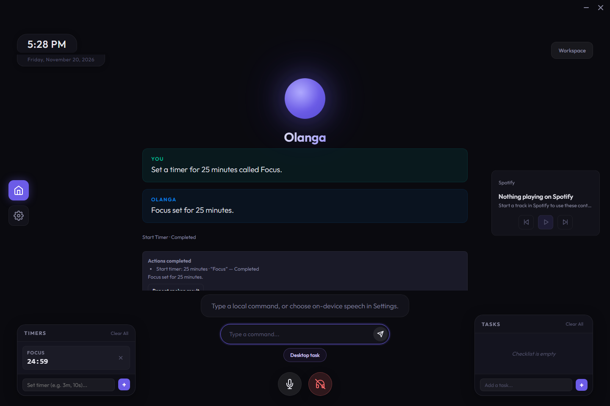

Version 1.6.7 · Windows 10/11 x64
Olanga Docs
Set up the desktop assistant, try a voice command, or run Olanga from source.
Read the README on GitHubTry your first command
Start a timer you can watch on Home. All you need is Olanga and a keyboard.
- Run the Windows installer and open Olanga. On the welcome screen, choose Use local commands without a key. If you’re already on Home, you’re ready.
- In the command box on Home, type “Set a timer for 25 minutes called Focus” and press Enter.
- Look under Timers for Focus. Once you see it count down, type “Cancel the Focus timer” and press Enter. The timer disappears.


Try it by voice
- In Settings → Core settings → Speech recognition, choose On-device commands (English, review first) to use your microphone without a key.
- Return to Home and unmute the microphone if needed. Say “Hey Olanga”, wait for the listening orb, then say “Set a timer for twenty-five minutes.”
- In Review what Olanga heard, check the words. Add “called Focus” at the end to give it the same name as before, then select Send request. The countdown appears under Timers.
If the orb doesn’t respond, check your microphone. For cloud transcription, conversation or screen assistance, add your Gemini API key in Core settings. Push-to-talk is available in User preferences.
Windows speech is built in. Optional NVIDIA Magpie voices use a separate NVIDIA API key; choose the voice and use Save & Test in Core settings.
Requirements: Windows 10/11 x64; a microphone for voice input; internet and available provider quota for cloud features. Spotify controls require the Spotify desktop app, signed in. Library and playlist selection currently depend on English accessibility labels. The Windows installer is unsigned; release assets include its checksum and build metadata.
Everyday requests
| Try saying | What happens |
|---|---|
| “Play Spotify and raise the volume to 75%.” | Opens Spotify if needed, attempts playback, sets Windows volume and reports the result of each action. |
| “Play my liked songs on Spotify.” | Opens your Liked Songs collection and checks playback. |
| “Pause it.” / “What’s playing?” | Uses recent Spotify context to control playback or check the current track. |
| “Open Chrome, then move Chrome to the left.” | Opens and arranges a supported app window, checking each step. |
| “Set a timer for 25 minutes called Focus.” | Starts a named timer that keeps its saved deadline across restarts. |
| “Add buy milk to my tasks.” | Adds a checklist item. Ask to complete it or read your tasks later. |
| “Remind me to call Mom in 20 minutes.” | Saves a local reminder. Olanga must be running to alert you. |
| “Brief me.” | Reads the time, tasks and upcoming reminders, with headlines and weather when available. |
| “Explain the error on my screen.” | Asks to capture your screen, then uses Gemini to help explain it. |
Supported compound requests run in order. Completed steps remain completed if a later step fails; results distinguish success, failure and anything that could not be verified. Press Escape in Olanga to cancel the remaining work.
Memory that follows the conversation
Tell Olanga “I live in Seattle” or “I prefer concise answers,” and it can retain those supported details without making you fill in a profile. Local rules learn clear statements you make directly; learned changes appear with Undo. Saved facts and recent conversation help follow-up questions make sense.
Ask “What do you remember about me?”, “What memories did you use?” or “Stop learning.” Review, edit or delete saved memories in Workspace. Learning and using existing memories have separate controls. Explicitly saved memories are protected from silent replacement.
“Forget where I live” removes your saved city and keeps your other preferences. If your city is part of a longer note, you can edit that note in Workspace or give Olanga its exact text to remove the whole note.
Learning stores supported personal details locally; it does not train a model or learn permission to act. Relevant enabled memories can accompany Gemini requests. Recent conversation expires automatically, while saved memories remain until you remove them.
Your work, ready to resume
Open Workspace from the top bar to find the tools you use throughout the day.
- Routines. Say “Create a routine called Focus” to open its editor, then save the exact commands you want. “Run routine Focus” opens a step-by-step review. Choose the steps and confirm before they run.
- Named workspaces. Combine a saved app layout, project, browser or editor session and optional routine. Preview a workspace before resuming it, with a result for each part.
- Files and projects. Preview file renames and moves before applying them. Search a selected project locally, then review source excerpts before asking Gemini about them.
- Notes, tasks and News. Keep notes with version history, manage your checklist and read a topic-based news digest with publishers, dates and source links. Headlines need no Gemini key; AI questions are optional. Enable Notepad and News in User preferences.
- Schedules and backups. Set once, daily or weekly reminders. Export supported personal content and review what a restore will replace; imported timers stay paused and schedules disabled until you resume them.
Pin a timer under Settings → User preferences → Timer card. See the next timer beside the corner orb, expand up to five timers, or tuck the card away with its handle. Timers and live scores share one card position with a switch between them. The orb's temporary hide controls apply to both, and the timer card disappears when the last timer is dismissed.
Optional browser and editor companions connect selected tabs, documents and text to these workflows. Phone remote, local model connections and reviewed MCP calls are available in Work tools when you need them.
Help with what’s on your screen
Ask Olanga to explain a screen or prepare an edit in a supported app. Desktop task, below the command box, also opens this workflow directly.
- Approve the screen capture and inspect the proposed target.
- Review the action plan and confirm the Windows input before it runs.
- See the result and what Olanga could verify from a fresh capture.
The capture includes your primary display. Selecting an edit region limits where Olanga can act; it does not crop the image shared with Gemini.
Supported input includes clicks, typing, scrolling and bounded keyboard shortcuts. Some full-field text replacements offer Before, After and a checked Undo text edit. Other edits may not have undo. Verification concerns the visible result; it does not establish that edited code compiles or passes tests.
Screen tasks are limited to supported, accessible controls on the primary display. Elevated windows and terminal automation are unsupported. The architecture guide explains the review, scope and cancellation rules.
Local commands, fewer waits
Common app, music, volume, timer, memory and checklist requests use a local intent matcher. Supported typed commands need no model call. Reviewed on-device commands also avoid cloud transcription; questions outside the local command set can still use Gemini.
Olanga acknowledges a request while work begins and displays completed action results without waiting for speech to finish. Conversational replies can stream sentence by sentence. Clear questions and known memory answers avoid unnecessary routing work, while hidden panels pause work they do not need.
Response time depends on your hardware, network, voice engine and the app being controlled. The validation report records measured performance, test coverage and remaining device-dependent checks. Workspace → Diagnostics provides optional local timing and outcome measurements.
Live scores and Spotify
Choose from all 30 NBA teams, with Golden State selected initially. The floating score card appears during a live game, checks ESPN about every 15 seconds and shows when updates are delayed. Its grip tucks the card into a slim strip while scores keep updating. When you enter Olanga, the floating card and orb make way for Home’s score and Spotify cards.
Enable scores in Settings → User preferences → Live scores. They need no AI key; ESPN updates may lag the broadcast. Spotify’s Home card reads the real Windows media session and changes playback only when you use its controls.
Make Olanga yours
User preferences contains conversation style, accents, contrast, orb glow, reduced motion, startup and shortcuts. Core settings keeps provider keys, speech recognition, microphone selection and guided audio checks together. Privacy links to memory, activity and diagnostic controls.
The corner orb has five customizable shortcuts. Enable Corner status light → All Lights to keep it visible while idle. Its colors show the current state: purple for idle, green for listening, orange for working and blue for speaking.
Moving the pointer onto the bottom Windows taskbar hides the corner orb and its timer or score card. Move the pointer off the taskbar and the controls return without taking focus from your app.
Closing the window keeps Olanga running in the tray. Choose Quit from its tray menu to exit. Timers and reminders cannot alert while the app is closed or Windows is asleep.
Updates, when you choose
Go to Workspace → Apps & updates, select Check for updates, then Download update. Once the installer is verified, choose Install & restart to update the existing installation and retain your saved data.
Checks, downloads and installation are manual. The updater checks the installer against the release checksum and reports restart readiness separately from installation. There are no unattended updates or automatic rollback. Older versions with only a release-page link can use the Windows installer.
Troubleshooting & bugs
Olanga didn’t hear me
If you chose local commands at setup, enable voice input first. Unmute the microphone on Home. Open Settings → Core settings → Audio setup, select Refresh devices, and choose the microphone you’re speaking into. The Input level meter should move as you speak.
Select Check a spoken phrase and say “Olanga audio check.” Look for Local phrase recognized. If the meter stays still, check the microphone’s hardware mute and whether Windows allows desktop apps to use it.
Spotify opened but didn’t play
Open the Spotify desktop app, sign in, and start a track on this PC. Return to Olanga Home and look for that track’s title on the Spotify card. Type “Pause Spotify”, then “Resume Spotify.” You should hear the same track stop and start again. If a combined request only changed the volume, include Olanga’s reply for each action when you report it.
I added my Gemini key, but requests fail
Open Settings → Core settings → Gemini connection. If your key isn’t listed, enter it and choose Add key. Select Test Gemini connection. A successful test says “Gemini connection is ready.”
If the test reports an invalid key, check that you copied the intended key from Google AI Studio. For a rate or quota limit, check the quota for that key’s project before retrying. For a connection error, check your internet connection. The typed timer works while you troubleshoot.
Report a bug
Open a GitHub issue with your Olanga and Windows versions, the exact command you typed or spoke, what you expected, and what happened. Include Olanga’s reply or the error text. Issues are public, so remove API keys and personal details before posting.
Privacy
Wake-word detection runs locally. Idle microphone audio is not streamed to an AI provider. Activated cloud speech requests go to Gemini; questions can include relevant conversation and enabled memories. Screen assistance shares the images you approve. Magpie sends reply text to NVIDIA when selected.
API keys use Windows-backed encryption. Notes, memories, routines and other saved content stay in the local profile; most of that content is not encrypted by Olanga. There is no automatic analytics or crash-report upload. Optional diagnostics stay local unless you export and share them.
Read the privacy notice for the data each feature shares, storage limits, provider policies and deletion controls. Do not post API keys, private screenshots or profile files in public issues.
Run from source
Use Windows and Node.js 22.12 or later:
git clone https://github.com/firestar3/Olanga-Desktop-Agent.git
cd Olanga-Desktop-Agent
npm ci
npm start
For the static checks and unit suite:
npm run check
npm test
The validation guide explains the separate renderer, voice and native checks, including those that interact with real apps. The architecture guide covers the Electron app, local command path and integrations. Build instructions are in Releasing.